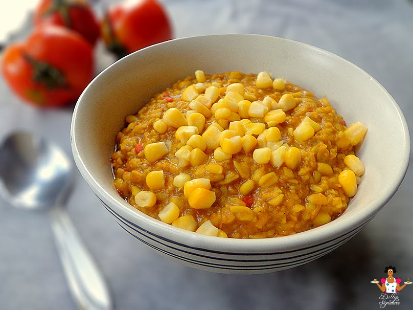

Ukwa Porridge Recipe

Description
Breadfruit porridge (Ukwa) is a popular Nigeria dish which originates from the eastern part of Nigeria.
It is prepared with the seeds of the Breadfruit "Treculia africana". Though priced expensive in the local market,
it's a meal which is highly sort after due to its rich taste and flavor. It's a versatile dish which can be prepared in
different ways i.e the plain version and the porridge version. In this article, we will be outlining how to prepare the
porridge version.
Ingredients
- 620g Breadfruit seeds (Ukwa)
- ¾ tbsp. potash "akaun" / Sodium Bicarbonate
- 100g Dry prawns (Oporo)/ Dry fish
- 1 Red Onion, diced - optional
- 3 Scotch Bonnets (Ata rodo), diced
- 1½ cooking spoon Palmoil
- 3 tbsp. Crayfish, ground
- 2 Stock Seasoning Cubes
- ½ tbsp. salt to taste
- 2 cups maize (boiled) or sweet corn - optional
How to make Ukwa Porridge
-
Step 1: Pick the breadfruit seeds (Ukwa) to remove the chaff
-
Step 2: Prepare the akaun by pounding to a fine powder. Pour the akaun powder into &half cup of water and
stir thoroughly to dissolve - set aside. Potash is used in the preparation of this meal to cut down the cooking time. This is because,
breadfruit (ukwa) takes a very long time to soften and the addition of potash which acts as a tenderizer to soften the ukwa
faster. If you are not as hungry as me, you could skip the addition of potash hehehe :).
-
Step 3: Wash severally to remove dirt and sand and place in a medium sized pot. Add 3 cups of water (just enough to cover
the content of the pot) and leave to boil for 30mins.
-
Step 4: Stir the potash and water mixture once more and pour into the boiling pot of Ukwa making sure you don't pour in the
residue which should be discarded.
-
Step 5: Add some more water just enough to cover the ukwa in the pot if needed and leave to boil and soften for another 10 mins.
At this stage, add the chopped onion, scotch bonnet, dried prawns "okporo" (with the head removed), salt to taste and seasoning cubes - Leave to
boil for 10 minutes.
-
Step 6: Add the crayfish and palmoil - stir and leave to boil together till the liquid in the pot evaporates.
- Stir in your sweet corn and serve this mouth watering delicacy you have just made